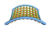

system = System(timestep=0.04)
[ Download ] [ Usage ] [ Screenshots ] [ Package Documentation ]
| Objective |
| Requirements |
| Download |
| Usage |
| |
|
|
from KineticsKit import System, Mass, CylinderSpring system = System(timestep=0.04) |
Next, Masses are generated and inserted into the System.
| |
|
|
## generate some masses mass1 = Mass(m=0.1, pos=(0.0, 0.0, 0.0)) mass2 = Mass(m=0.1, pos=(0.0, 0.5, 0.0)) ## insert them into the system system.insertMass(mass1) system.insertMass(mass2) |
After this, the Masses can be connected with Springs. There are several types of Springs available which differ in their
visual appearance. Here we take a CylinderSpring.
| |
|
|
## connect the masses with a spring spring1 = CylinderSpring(m0=mass1, m1=mass2, k=1) ## insert the spring into the system system.insertSpring(spring1) |
Finally the System has to be started and kept running with an infinite loop. The System also provides a convenience
function for this purpose.
| |
|
|
## start the mainloop (convenience function) system.mainloop() |
| Interaction |
Zooming / rotating of the scene is also done with the mouse by holding the left / right mouse button down.
| Examples |
screenshot, exa01_unstable_equilibrium.py
screenshot, exa02_doublependulum_in_space.py
screenshot, exa03_circling_mass.py
screenshot, exa04_the_cube.py
screenshot, exa05_multiple_Systems.py
screenshot, exa06_golden_gate.py
screenshot, exa07_lattice.py
screenshot, exa08_zinkblende.py
screenshot, exa09_the_grid.py
screenshot, exa10_hypergrid.py
| Package Documentation |
Have fun! 
{kind=link}
{kind=link}
{kind=link}
{kind=link}
{kind=link}
{kind=link}
{kind=link}
{kind=link}
{kind=link}
{kind=link}